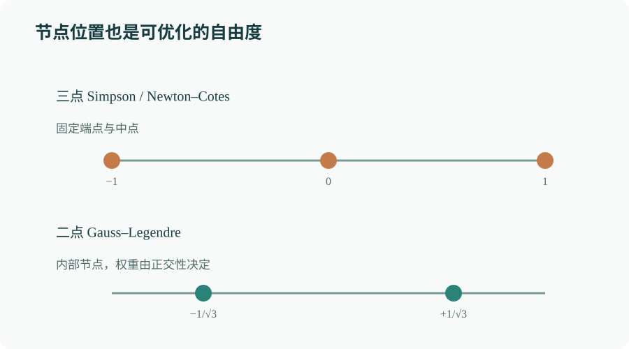
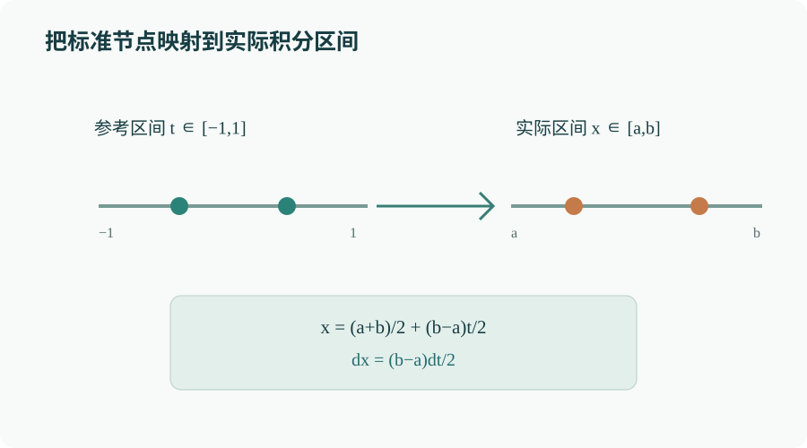

CHAPTER 12 · NUMERICAL ANALYSIS
Gauss 求积：用正交多项式选择最有效的节点
为什么 n 个自由节点和权重能让积分对 2n−1 次多项式精确？从多项式除法证明到 Gauss–Legendre 节点、权重、区间映射与误差边界。
01 · 同样三次精度，为什么有时两个节点胜过三个？
在 [−1,1] 上，三点 Simpson 规则对三次多项式精确，需要评价两个端点和中点。两点 Gauss–Legendre 规则只评价 −1/√3 与 +1/√3，却也对所有三次多项式精确。差异不在权重“更聪明”这么简单：Gauss 规则同时选择节点位置与权重，而等距 Newton–Cotes 规则把节点位置固定住了。

02 · n 点 Gauss 规则的定义与最高代数精度
考虑正权函数 w(x)>0 的积分。n 点求积由 n 个节点和 n 个权重构成。对于任意给定节点的插值型公式，n 个权重可以保证至少对次数不超过 n−1 的多项式精确；Gauss 规则进一步选择节点，使代数精度达到理论上限 2n−1。
证明最高精度的关键是选取与权函数正交的 n 次多项式 pₙ 的全部零点作为节点。任意次数不超过 2n−1 的多项式可以除以 pₙ，写成 f=q pₙ+r，其中 deg(q),deg(r)≤n−1。积分中的 q pₙ 项由正交性变成零；在求积节点上 pₙ(xᵢ)=0，采样值也只剩 r(xᵢ)。而插值型 n 点规则对次数不超过 n−1 的 r 精确，于是积分和求积两边相等。
这个上限对正权 n 点公式是最优的：若要对次数更高的所有多项式都精确，节点和权重的自由度不足。NIST DLMF 对一般正权 Gauss–Christoffel 规则给出了节点零点、正权重和余项的统一表达。
03 · Gauss–Legendre：从标准区间映射到任意区间
最常见的 Gauss–Legendre 规则取 w(x)=1、区间 [−1,1]，节点是 Legendre 多项式 Pₙ 的 n 个根。对应权重可由节点处的导数计算，所有权重为正，且权重和等于区间测度 2。
对任意有限区间，使用仿射变换 x=(a+b)/2+(b−a)t/2，同时把积分微元变成 dx=(b−a)dt/2。如果忘记这个 Jacobian 因子，节点即使正确，最终积分也会整体缩放错误。
两点 Gauss–Legendre 公式尤其适合手算核对：节点为 ±1/√3，权重都为 1。它对常数、一次、二次、三次多项式都精确；对四次多项式则不再精确。

04 · 与 Newton–Cotes 比较：看代数精度，不只看阶数
两点 Gauss 在 [−1,1] 上对 x³ 精确；三点 Simpson 也对 x³ 精确，但用了三个函数值。对 x⁴，两点 Gauss 给出 2/9，真实积分为 2/5，误差为 8/45；三点 Gauss 则因精度达到五次而精确。这里“两个节点更高效”只针对固定的多项式精确度和单次光滑积分，不代表所有积分都能减少相同数量的求值。
05 · 余项与权函数：高精度并不意味着万能
在标准 Gauss–Legendre 规则下，如果 f 有连续的 2n 阶导数，误差余项可写成该阶导数在某个区间点的值乘以正的常数。这个表达式解释了为何规则对低次多项式精确，也说明光滑性是经典余项公式的重要假设。
Gauss–Legendre 是 w=1 的一种选择。若被积函数在端点附近具有可预测的权重行为，可以改用 Gauss–Jacobi、Gauss–Laguerre 或 Gauss–Hermite，让权函数吸收端点或无穷远处的主要变化。选择权函数时，必须确保剩余被积函数适合该区间和权重；不要把不同 Gauss 家族的节点、区间和权重混用。
对间断、尖峰或局部快速变化，单一全局高阶规则未必合适。分段 Gauss 或自适应 Gauss–Kronrod 通过比较嵌套规则估计局部误差，通常更适合有局部结构的函数。Gauss 节点和权重也不是随意的等距采样；它们应由稳定的专用实现生成，而不是高次数时直接解一个矩条件 Vandermonde 系统。
06 · 可复现实验：二点与三点规则的多项式精确度
import math
def gauss2(f):
r = 1.0 / math.sqrt(3.0)
return f(-r) + f(r)
def gauss3(f):
r = math.sqrt(3.0 / 5.0)
return (5.0/9.0)*f(-r) + (8.0/9.0)*f(0.0) + (5.0/9.0)*f(r)
for degree in range(6):
f = lambda x, d=degree: x**d
exact = 0.0 if degree % 2 else 2.0/(degree+1)
q2, q3 = gauss2(f), gauss3(f)
if degree <= 3:
assert abs(q2-exact) < 1e-12
if degree <= 5:
assert abs(q3-exact) < 1e-12
print(degree, exact, q2, q3)
# Affine map: x = (a+b)/2 + (b-a)t/2
def mapped_gauss2(f, a, b):
mid, half = (a+b)/2, (b-a)/2
r = 1/math.sqrt(3)
return half*(f(mid-half*r)+f(mid+half*r))
assert abs(mapped_gauss2(lambda x:x**3, 2, 5) - (5**4-2**4)/4) < 1e-11NumPy 的 leggauss(n) 和 SciPy 的 roots_legendre(n) 都提供标准区间的节点与权重。生产计算中应优先使用经过测试的实现；NumPy 文档也明确说明其高阶节点权重的测试范围有限，不应将接口存在误读成任意高阶都已验证。
原始资料与延伸阅读
理论结论按原始数学资料与维护方文档交叉核对；本页图解、数值表和代码是独立构造的教学示例。
- NIST DLMF §3.5 · Quadrature：复合梯形、Simpson、Romberg、Gauss 求积与误差展开。
- SciPy · roots_legendre：Gauss–Legendre 节点为 Legendre 多项式零点，n 点规则对 2n−1 次及以下多项式精确。
- NumPy · leggauss：Legendre Gauss 求积节点与权重的接口及适用范围说明。